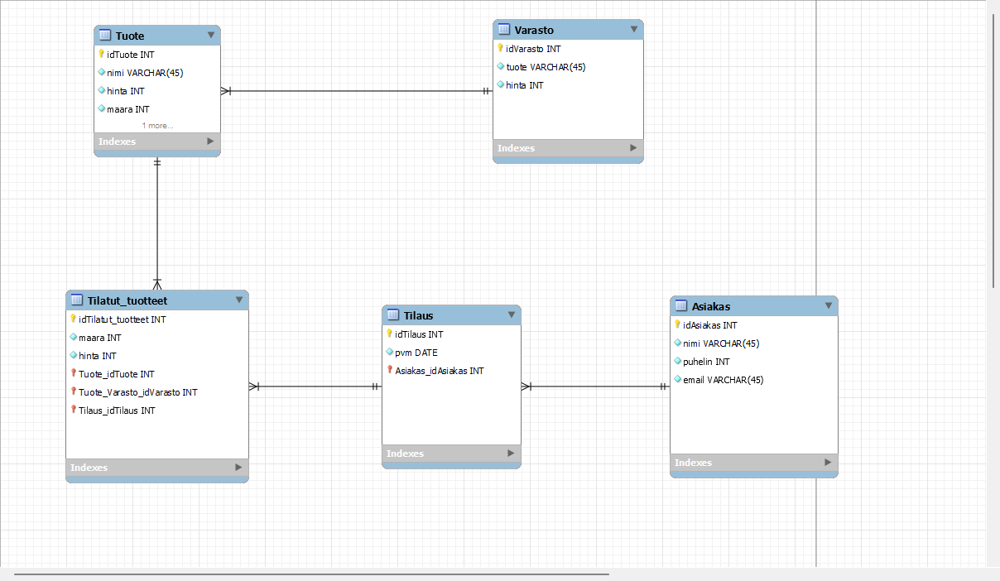

Tietokanna toteutus
Tietokannan luominen mariaDB-palvelimelle MySQL Workbenchillä
Kaavio

MySQL luoma scripti tietokannasta
-- MySQL Workbench Forward Engineering
SET @OLD_UNIQUE_CHECKS=@@UNIQUE_CHECKS, UNIQUE_CHECKS=0;
SET @OLD_FOREIGN_KEY_CHECKS=@@FOREIGN_KEY_CHECKS, FOREIGN_KEY_CHECKS=0;
SET @OLD_SQL_MODE=@@SQL_MODE, SQL_MODE='ONLY_FULL_GROUP_BY,STRICT_TRANS_TABLES,NO_ZERO_IN_DATE,NO_ZERO_DATE,ERROR_FOR_DIVISION_BY_ZERO,NO_ENGINE_SUBSTITUTION';
-- -----------------------------------------------------
-- Schema AB6911
-- -----------------------------------------------------
-- -----------------------------------------------------
-- Schema AB6911
-- -----------------------------------------------------
CREATE SCHEMA IF NOT EXISTS `AB6911` ;
USE `AB6911` ;
-- -----------------------------------------------------
-- Table `AB6911`.`Asiakas`
-- -----------------------------------------------------
CREATE TABLE IF NOT EXISTS `AB6911`.`Asiakas` (
`idAsiakas` INT NOT NULL,
`nimi` VARCHAR(45) NOT NULL,
`puhelin` INT NOT NULL,
`email` VARCHAR(45) NOT NULL,
PRIMARY KEY (`idAsiakas`))
ENGINE = InnoDB;
-- -----------------------------------------------------
-- Table `AB6911`.`Tilaus`
-- -----------------------------------------------------
CREATE TABLE IF NOT EXISTS `AB6911`.`Tilaus` (
`idTilaus` INT NOT NULL,
`pvm` DATE NULL,
`Asiakas_idAsiakas` INT NOT NULL,
PRIMARY KEY (`idTilaus`, `Asiakas_idAsiakas`),
INDEX `fk_Tilaus_Asiakas1_idx` (`Asiakas_idAsiakas` ASC) VISIBLE,
CONSTRAINT `fk_Tilaus_Asiakas1`
FOREIGN KEY (`Asiakas_idAsiakas`)
REFERENCES `AB6911`.`Asiakas` (`idAsiakas`)
ON DELETE NO ACTION
ON UPDATE NO ACTION)
ENGINE = InnoDB;
-- -----------------------------------------------------
-- Table `AB6911`.`Varasto`
-- -----------------------------------------------------
CREATE TABLE IF NOT EXISTS `AB6911`.`Varasto` (
`idVarasto` INT NOT NULL AUTO_INCREMENT,
`tuote` VARCHAR(45) NOT NULL,
`hinta` INT NOT NULL,
PRIMARY KEY (`idVarasto`))
ENGINE = InnoDB;
-- -----------------------------------------------------
-- Table `AB6911`.`Tuote`
-- -----------------------------------------------------
CREATE TABLE IF NOT EXISTS `AB6911`.`Tuote` (
`idTuote` INT NOT NULL,
`nimi` VARCHAR(45) NOT NULL,
`hinta` INT NOT NULL,
`maara` INT NOT NULL,
`Varasto_idVarasto` INT NOT NULL,
PRIMARY KEY (`idTuote`, `Varasto_idVarasto`),
INDEX `fk_Tuote_Varasto_idx` (`Varasto_idVarasto` ASC) VISIBLE,
CONSTRAINT `fk_Tuote_Varasto`
FOREIGN KEY (`Varasto_idVarasto`)
REFERENCES `AB6911`.`Varasto` (`idVarasto`)
ON DELETE NO ACTION
ON UPDATE NO ACTION)
ENGINE = InnoDB;
-- -----------------------------------------------------
-- Table `AB6911`.`Tilatut_tuotteet`
-- -----------------------------------------------------
CREATE TABLE IF NOT EXISTS `AB6911`.`Tilatut_tuotteet` (
`idTilatut_tuotteet` INT NOT NULL,
`maara` INT NOT NULL,
`hinta` INT NOT NULL,
`Tuote_idTuote` INT NOT NULL,
`Tuote_Varasto_idVarasto` INT NOT NULL,
`Tilaus_idTilaus` INT NOT NULL,
PRIMARY KEY (`idTilatut_tuotteet`, `Tuote_idTuote`, `Tuote_Varasto_idVarasto`, `Tilaus_idTilaus`),
INDEX `fk_Tilatut_tuotteet_Tuote1_idx` (`Tuote_idTuote` ASC, `Tuote_Varasto_idVarasto` ASC) VISIBLE,
INDEX `fk_Tilatut_tuotteet_Tilaus1_idx` (`Tilaus_idTilaus` ASC) VISIBLE,
CONSTRAINT `fk_Tilatut_tuotteet_Tuote1`
FOREIGN KEY (`Tuote_idTuote` , `Tuote_Varasto_idVarasto`)
REFERENCES `AB6911`.`Tuote` (`idTuote` , `Varasto_idVarasto`)
ON DELETE NO ACTION
ON UPDATE NO ACTION,
CONSTRAINT `fk_Tilatut_tuotteet_Tilaus1`
FOREIGN KEY (`Tilaus_idTilaus`)
REFERENCES `AB6911`.`Tilaus` (`idTilaus`)
ON DELETE NO ACTION
ON UPDATE NO ACTION)
ENGINE = InnoDB;
SET SQL_MODE=@OLD_SQL_MODE;
SET FOREIGN_KEY_CHECKS=@OLD_FOREIGN_KEY_CHECKS;
SET UNIQUE_CHECKS=@OLD_UNIQUE_CHECKS;
Testataan toimiiko taulukot

Lisätään sisältöä tauluihin
Komentoja joilla lisäsin dataa tauluihin
BEGIN;
# Lisätään varastoon tuotteita
INSERT INTO Varasto (idVarsto, tuote, hinta) VALUES
(1, 'Kissa', 100),
(2, 'WC-Paperi', 4),
(3, 'Polkupyörä', 200),
(4, 'Tyyny', 10),
(5, 'Tietokone', 900);
# Tuotteet
INSERT INTO Tuote (idTuote, nimi, hinta, maara, Varasto_idVarasto) VALUES
(1, 'Kissa', 100, 3, 1),
(2, 'WC-Paperi', 4, 10, 2),
(3, 'Polkupyörä', 200, 5, 3),
(4, 'Tyyny', 10, 20, 4),
(5, 'Tietokone', 900, 8, 5);
# Asiakkaat
INSERT INTO Asiakas (idAsiakas, nimi, puhelin, email) VALUES
(1, 'Kimmo', '044123123', 'asdasd@jee.com'),
(2, 'Tiina', '123444222', 'moro@juu.com'),
(3, 'Johannes', '000234123', 'johannes@johannes.com'),
(4, 'Oliver', '234098123', 'oliver@toissa.com');
# Tilaus
INSERT INTO Tilaus (idTilaus, pvm, Asiakas_idAsiakas) VALUES
(1, '2020-12-10', 4),
(2, '2020-10-10', 3),
(3, '2020-04-24', 2),
(4, '2020-05-23', 1);
# Tilatut tuotteet
INSERT INTO Tilatut_tuotteet (idTilatut_tuotteet, maara, hinta, Tuote_idTuote, Tuote_Varasto_idWarehouse, Tilaus_idTilaus) VALUES
(1, 1, 100, 1, 1, 1, 1),
(2, 2, 8, 2, 2, 2, 2),
(3, 1, 200, 3, 3, 3, 3),
(4, 1, 900, 4, 4, 4, 4);
COMMIT;
Näkymien luomista
Näkymien lisäys
# Tehdään näkymä joka näyttää asiakkaiden tilaukset
CREATE VIEW Asiakas_tilaus AS
SELECT Tilaus.idTilaus, Tilaus.pvm, Asiakas.nimi, Asiakas.puhelin, Asiakas.email
FROM Tilaus
JOIN Asiakas ON Tilaus.Asiakas_idAsiakas = Asiakas.idAsiakas;
SELECT * FROM Asiakas_tilaus;
# Tehdään näkymä joka näyttää tuotteet varastossa
CREATE VIEW Varasto_tuotteet AS
SELECT Varasto.idVarato, Tuote.nimi AS tuotteen_nimi, Tuote.maara AS tuotteen_maara
FROM Varasto
INNER JOIN Tuote ON Varasto.idVarasto = Tuote.Varasto_idVarasto;
# Luodaan näkymä jossa näkyy tilatut tuotteet, määrä ja hinta
CREATE VIEW Tilaus_tuotteet AS
SELECT Tilaus.idTilaus, Tilaus.pvm, Asiakas.nimi AS asiakas_nimi, Tilatut_tuotteet.maara AS tilatut_tuotteet_maara,
Tilatut_tuotteet.hinta AS tilatut_tuotteet_hinta, Tuote.nimi AS tuotteen_nimi
FROM Tilaus
INNER JOIN Asiakas ON Tilaus.Asiakas_idAsiakas = Asiakas.idAsiakas
INNER JOIN Tilatut_tuotteet ON Tilaus.idTilaus = Tilatut_tuotteet.Tilaus_idTilaus
INNER JOIN Tuote ON Tilatut_tuotteet.Tuote_idTuote = Tuote.idTuote AND Tilatut_tuotteet.Tuote_Varasto_idVarasto = Tuote.Varasto_idVarasto;
# Luodaan näkymä josta nähdään asiakkaan rahan kulutus
CREATE VIEW asiakas_kulutus AS
SELECT
Asiakas.idAsiakas,
Asiakas.nimi,
SUM(Tilatut_tuotteet.maara * Tilatut_tuotteet.hinta) AS rahan_kulutus
FROM
Asiakas
JOIN Tilaus ON Asiakas.idAsiakas = Tilaus.Asiakas_idAsiakas
JOIN Tilatut_tuotteet ON Tilaus.idTilaus = Tilatut_tuotteet.Tilaus_idTilaus
GROUP BY
Asiakas.idAsiakas;
# Tällä näkymällä nähdään kuinka monta tilausta asiakas on tehnyt
CREATE VIEW Tilaukset AS
SELECT
Asiakas.idAsiakas,
Asiakas.nimi,
COUNT(DISTINCT Tilaus.idTilaus) AS Tilaukset
FROM
Asiakas
JOIN Tilaus ON Asiakas.idAsiakas = Tilaus.Asiakas_idAsiakas
GROUP BY
Asiakas.idAsiakas;